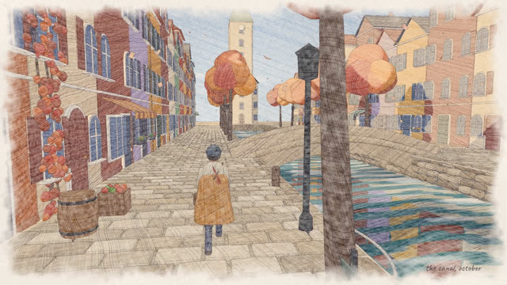
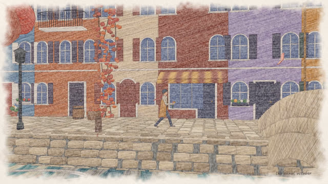
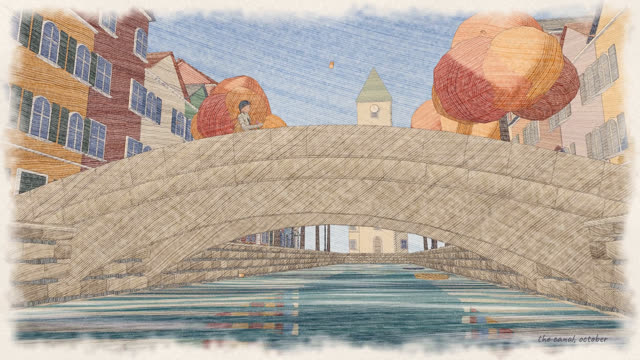
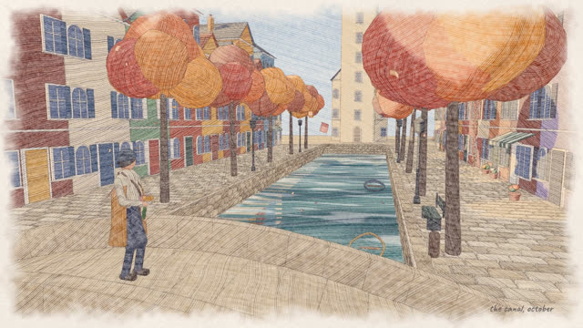
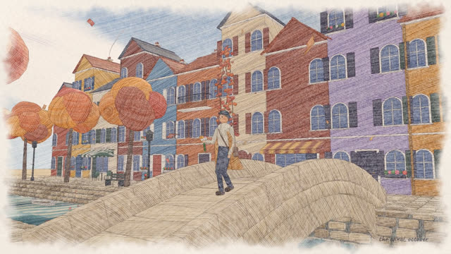

작업 흐름
- 입력
- 주제 하나(시월의 운하 마을, 한낮의 해바라기 밭길, 눈 온 뒤의 산골 마을, 학교 가는 길 …). 레퍼런스 그림 · 영상이 있으면 그 스틸
- 브리프
- 한 줄로 쓴 그림, 시간과 빛(해의 방향과 높이, 햇빛 색연필 · 그늘 색연필), 장소와 길, 집 · 나무 · 물 · 작은 것들과 각각의 색연필, 걷는 사람, 샷 3–7개, 캡션을 적은
BRIEF.md - 세계
- 하늘 · 먼 산 · 땅 · 포석 · 물 · 집과 집의 줄 · 다리 · 나무 · 가로등과 벤치 · 깃발 줄 · 배 · 새 · 떨어지는 잎을 키트로 놓기. 새로운 것은 둥근 덩어리 도형을 조합해 직접 작성
- 인물
- 모델 · 클립 없이 코드로 만든 몸. 발은 길 위에 심고(다리 아치도 오름), 다리는 IK, 코트와 목도리는 규칙으로 흔들림. 앞 · 옆 · 뒤 · 걷기 · 달리기 22포즈 캐스트 시트로 방향과 관절 확인
- 확인
- 그리지 않은 곳 · 검정 · 색 부족 · 움직임 · 결정성, 시점과 인물이 벽 · 나무 · 물에 들어가지 않는지, 모든 포즈가 관절 범위 안인지 검사
- 출력
- 30fps 1920×1080 MP4(소리 없음), 영상 반복 재생 · W A S D 걷기 · 드래그 둘러보기 라이브 페이지
cd colored-pencil-world/examples/canal-october
node ../../scripts/check.mjs index.html
node ../../scripts/render.mjs index.html --cast --scale .5
node ../../scripts/render.mjs index.html --sheet --scale .5
node ../../scripts/render.mjs index.html --preview
node ../../scripts/render.mjs index.html
node ../../scripts/new-world.mjs ~/my-world요구 사항: Node + Playwright Chromium, ffmpeg. npm 설치 · API 키가 필요 없습니다. 영상은 GPU 없이 CPU WebGL로 렌더합니다(1080p 한 프레임 약 2–4초). 라이브 페이지는 GPU가 있어야 매끄럽게 움직입니다. 단계별 순서는 SKILL.md에 있습니다.
샘플
원본의 항구 마을에 없는 주제로 브리프부터 새로 설계해 만든 예제의 다섯 샷, 인물과 선 검토, 시작 템플릿입니다. 카드를 누르면 그 순간이 라이브 페이지에서 멈춘 채 열립니다.
「Canal in October」 20초 · 5샷
시월 오후의 운하 마을: 겨자색 코트에 긴 빨간 목도리를 한 사람이 단풍 든 보리수 아래 서쪽 부두를 걷다가, 꽃다발을 들고 돌다리를 건너 다리 꼭대기에서 운하 끝의 교회탑을 바라보고, 건너편 부두로 내려옵니다

샷 1 · 부두뒤에서 따라가기벽 · 기와 · 포석마다 자기 방향의 선, 물에 끊어져 비친 건너편 집들

샷 2 · 건너편지나가는 사람그늘 쪽 벽에 겹친 보라 그늘 색연필, 돌 축대의 층

샷 3 · 물 위에서올려다보기물결에 끊긴 반사, 맨 종이로 남긴 반짝임과 구름

샷 4 · 다리 꼭대기멈춰 서서 바라보기다리 아치 위에 심은 발, 범위 안에서 돌린 고개, 떨어지는 잎

샷 5 · 건너편 부두로앞에서 맞이하기오른손의 꽃다발, 왼쪽 엉덩이의 가방, 바람에 날리는 목도리
인물과 선 검토 캐스트 시트 · 확대
샷을 쓰기 전에 인물을 모든 방향과 걸음으로 보고, 스틸은 원래 크기로 확대해 선과 종이 결을 확인합니다
시작 템플릿 「Sunflower Track」 12초 · 3샷
한낮의 해바라기 밭길과 빨간 헛간. 새 세계는 이 페이지의 ①–⑧을 주제에 맞게 바꿔서 시작합니다
실제 작품
이 스킬을 만든 출처와, 이 레포에서 새 주제로 만든 예제입니다.
원본 · Blendi의 X 게시물「색연필」 게임 한 장면 14초 · 항구 마을 · 모든 면의 음영과 마을이 코드x.com/BlendiByl/status/2121130385723789637
원본 프로젝트 · Coloured pencil항구 마을과 선원 · 코드 MIT © 2026 Patch · 색연필 셰이더와 종이 패스를 여기서 가져와 고침patch.gg/blendi/coloured-pencil
「Canal in October」20초 · 5샷 · 라이브 페이지 · 걷기 모드colored-pencil-world/examples/canal-october
원본 레포 · motion-skills이 레포에서 만듦github.com/jungrok5/motion-skills
링크
- SKILL.md 워크플로
- 폴더 lib · scripts · templates · examples
- README.md 빠른 시작
- references/BRIEF.md 주제 → 브리프, 캐스트 시트 · 스틸 검토 기준
- references/LOOK.md 색연필로 읽히게 하는 열 가지
- references/KIT.md 세계 설정, 키트의 모든 것과 옵션, 샷과 카메라
- references/FIGURE.md 인물의 몸, 관절 범위, 캐스트 시트
- references/SOURCE.md 원본에서 가져온 것과 바꾼 것
- references/LESSONS.md 겪은 문제와 해결